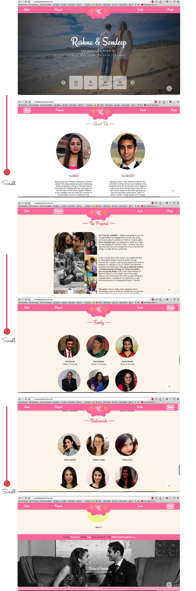

The client wanted a wedding website to be designed and developed from scratch in vanilla javascript, HTML and CSS. All design and UI elements, including the logo needed to be original. The color pallette and other UI details chosen had to reflect the vibrance of an indian wedding.
Research was conducted to see how other wedding websites were organized, including the main sections that were needed and the different ways information was presented.
Development was done by myself and another developer. We worked collaboratively using GIT to power our development workflow. Particular attention was given to responsive design to ensure that the website was fully mobile compatible in both potrait and landscape orientation. The end result can be seen in the LIVE website and in the screenshots below: 
The website was tested on many different devices and screen sizes. Testing was done in both landscape and portrait orientation. Major browsers were checked such as IE9+, Safari, Chrome, Firefox.
During testing it was discovered that the website's speed was not what we wanted it to be. Two optimizations that caused significant decrease in loading times were:
The final product given to the client was a fully functioning, responsive and beautifully designed wedding website.